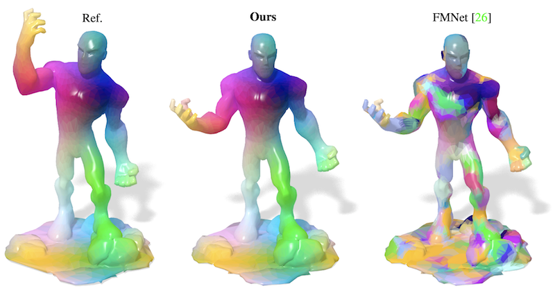
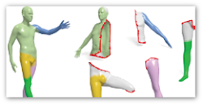

|
Or Litany
orlitany at gmail dot com
I am a post-doctoral researcher at FAIR, and Stanford University; working under Prof. Jitendra Malik and Prof. Leonidas Guibas. Previously, I was a post-doc at the Technion and a research intern at Microsoft, Intel and Google. I received my PhD from Tel-Aviv University, where I was advised by Prof. Alex Bronstein. I received my B.Sc. in Physics and Mathematics from the Hebrew University under the auspices of “Talpiot”.
My research interests include: Computer Vision, Deep Learning, Shape Analysis, Computational photography, and Sparse Models.
 / /
 / /
 / /

|
|
Preprints
| 
|
Self-supervised Learning of Dense Shape Correspondence
arXiv, 2018
Oshri Halimi, Or Litany, Emanuele Rodolà, Alex Bronstein, Ron Kimmel
paper /
bibtex
@article{litany2018soseleto,
Author = {Oshri Halimi and Or Litany and Emanuele Rodol{\`a} and Alex Bronstein, and Ron Kimmel},
Title = {Self-supervised Learning of Dense Shape Correspondence},
Journal = {arXiv preprint arXiv:1812.02415},
Year = {2018}}
|

|
FPGA system for real-time computational extended depth of field imaging using phase aperture coding
arXiv, 2016
Tal Remez, Or Litany, Shachar Yoseff, Harel Haim, Alex Bronstein
paper /
bibtex
@article{remez2016fpga,
title={FPGA system for real-time computational extended depth of field imaging
using phase aperture coding},
author={Remez, Tal and Litany, Or and Yoseff, Shachar and Haim, Harel and Bronstein, Alex},
journal={arXiv preprint arXiv:1608.01074},
year={2016}
}
|
Book chapters
| 
|
Partial Single-and Multishape Dense Correspondence Using Functional Maps
Elsevier, 2018
Or Litany, Emanuele Rodolà, Alex Bronstein, Michael Bronstein, Daniel Cremers
paper /
bibtex
@article{litany2018partial,
title={Partial Single-and Multishape Dense Correspondence Using Functional Maps},
author={Litany, Or and Rodol{\`a}, Emanuele and Bronstein, Alex and Bronstein, Michael and Cremers, Daniel},
year={2018},
publisher={Elsevier}
}
|
|